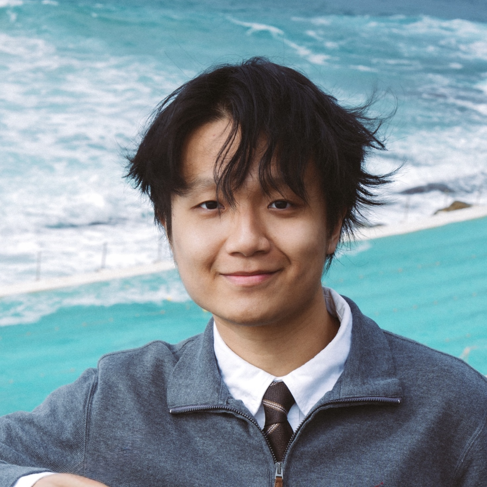
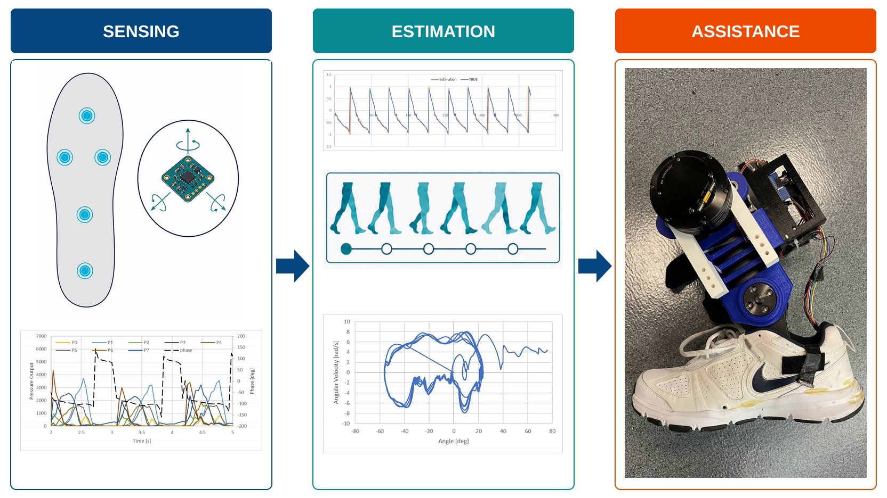
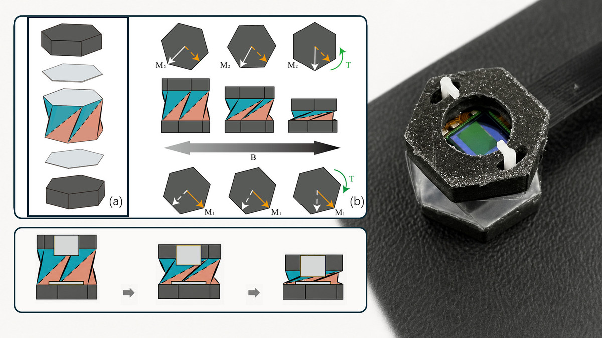

Shangtao Li
M.S. student at CMU, advised by Changliu Liu. Previously at UC Berkeley. B.E. from XJTU.
Highlights
About
My research focuses on developing robot learning systems that adapt to new tasks and improve through interaction with the physical world. I am interested in how learning from diverse experience and predicting action outcomes can support long-horizon decision-making and policy improvement.
Publication * Equal contribution
Selected Projects

Development of an Ankle Manipulator for Human Assistance
UC Berkeley · 2023
Details
Developed a wearable ankle-assistance prototype aimed at providing on-demand balance support. Integrated IMU and plantar-pressure sensing with motor control, redesigned the wearable enclosure, and improved neural gait-phase prediction using recent pressure measurements.

Magnetically Actuated Kresling Origami Millirobot
XJTU · 2025 · Outstanding Undergraduate Thesis (Top 1%)
Details
Developed a magneto-mechanical model linking external magnetic fields to the deformation of a Kresling-origami robot. Validated the magnetic and structural models through MATLAB/COMSOL analysis and compression experiments, and built a miniature camera-focusing prototype.
Education